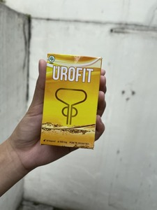

Saya Dokter Wirawan, spesialis urologi. Banyak sekali pasien saya yang menderita hidup dengan prostatitis selama bertahun-tahun, dan yang saya inginkan adalah mereka bisa sembuh dari penyakit ini.
Salah satu pasien saya, Chandra (32 tahun) datang berkonsultasi dengan membawa keluhan mengeluarkan darah saat buang air kecil. Awalnya ia hanya merasakan nyeri saat buang air kecil dan di daerah sekitar panggul. Nyeri tersebut diabaikannya sampai ketika darah mulai muncul saat buang air kecil, ia memutuskan harus segera ke dokter.
Benar, nyeri saat buang air kecil hingga mengeluarkan darah merupakan salah satu gejala awal prostatitis yang banyak dikeluhkan pasien. Yang paling parah tentu saja keluhan impotensi, atau lebih buruk lagi bisa berujung pada kematian karena kanker prostat.
Prostatitis adalah peradangan pada kelenjar prostat yang datang secara tiba-tiba (akut) atau berkembang secara bertahap dalam periode waktu yang lebih panjang (kronis). Prostatitis biasanya terjadi pada pria di atas usia 40 tahun, tapi banyak juga pasien saya yang masih berusia muda seperti Chandra.
Sebagai salah satu organ pada sistem reproduksi pria, kelenjar prostat berperan sangat penting dalam memproduksi sperma. Kalau kelenjar prostat meradang dan membengkak, maka akan timbul rasa nyeri di daerah sekitar panggul serta rasa nyeri saat buang air kecil atau ejakulasi.
Apa saja gejala Prostatitis?
Gejala prostatitis bisa berupa keluhan ringan hingga berat, tergantung pada jenis prostatitisnya. Sayangnya, banyak pasien yang datang berkonsultasi dengan keluhan yang sudah berat. BIasanya karena menggampangkan gejala yang muncul, serta malu ke dokter untuk memeriksakan diri. Seperti Chandra, ia menganggap remeh nyerinya, sampai akhirnya ketika kencingnya mengeluarkan darah, barulah ia memberanikan diri untuk periksa ke dokter.
Sebenarnya keluhan yang dialami Chandra termasuk yang ringan. Banyak pasien yang datang dengan keluhan sulit buang air kecil atau aliran kencing yang semakin melemah. Ada juga yang mengeluh kencingnya mengeluarkan busa dan berbau tidak sedap. Tidak sedikit juga pasien yang datang karena sudah terganggu aktivitas seksualnya, mulai dari sperma yang keluar bersama darah, menurunnya durasi dan kualitas ereksi, hingga ejakulasi yang lemah.
Ketika gejala masih ringan dan langsung diobati, seharusnya penyakit prostatitis bisa sembuh. Tapi karena penundaan atau malas ke dokter, para pasien ini datang ketika keganasan mulai berkembang. Prostatitis yang sudah memasuki tahap ganas bisa menjadi penyakit yang mengakibatkan komplikasi. Komplikasi ini bisa sangat beragam bentuknya, diantaranya peradangan di saluran testis dan penyebaran infeksi ke seluruh tubuh melalui aliran darah, hingga kematian, seperti kanker prostat yang bisa berkembang dengan sangat cepat -hanya dalam tempo 1 hingga 2 tahun.
Pengobatan Prostatitis di Indonesia
Saat ini pengobatan prostatitis di Indonesia masih berkutat dengan cara medis yang tergantung pada jenis dan tingkat keparahannya. Dari keluhan yang masuk, dokter akan melakukan banyak pemeriksaan dan tes. Di tahap ini pasien biasanya mengeluh akan banyaknya tes yang menghabiskan banyak WAKTU dan tentu saja, BIAYA.
Setelah hasil pemeriksaan keluar, dokter akan meresepkan obat. Obat-obatan ini biasanya hanya meringankan gejala prostatitis, bukan untuk mengobati prostatitis secara menyeluruh.
Selain obat-obatan dokter juga menyarankan terapi pijat prostat rektal yang biasanya terdiri dari belasan sesi. Terapi pijat ini banyak dikeluhkan pasien karena menimbulkan perasaan tidak nyaman. Bayangkan saja, metodenya menggunakan jari yang memijat melalui lubang anus. Belum lagi biayanya yang cukup mahal meski masih belum memberikan jaminan kesembuhan juga!
Kasus lainnya, jika pasien telah mengalami pembengkakan kelenjar prostat dan mengalami kesulitan buang air kecil, maka dokter akan melakukan pemasangan kateter dari perut bagian bawah (suprapubic). Bahkan ada juga yang dalam pemeriksaan ditemukan batu pada prostat, maka dokter akan melakukan tindakan medis berupa pemotongan dan pengangkatan prostat melalui prosedur prostatektomi total.
Apakah pengobatan medis dapat memberikan jaminan untuk sembuh dari prostatitis secara permanen?
Pertanyaan ini adalah pertanyaan bagus yang Chandra ajukan kepada saya. Jawabannya adalah, jika keluhan masih ringan dan segera diobati, sembuh dari prostatitis adalah hal yang tidak mustahil.
Lalu Chandra bertanya lagi, apakah pengobatan medis dapat memberikan jaminan sembuh secara permanen?
Saya mengerti bahwa banyak pasien yang mengeluhkan soal tahapan pengobatan yang panjang dan melelahkan. Pasien menginginkan pengobatan yang lebih cepat, dan harus bisa mengobati prostatitis secara menyeluruh, bukan hanya meredakan gejala saja. Termasuk Chandra yang masih muda dan sedang sibuk-sibuknya membangun karir, pengobatan yang berlarut-larut pasti akan mengganggu aktivitasnya. Ia menginginkan pengobatan yang efektif, bisa menyembuhkan secara permanen, dan yang paling penting, aman untuk jangka panjang.
Adakah metode pengobatan yang efektif sekaligus AMAN buat pasien?
Tes Dokter Wirawan
Para peserta tes mendapat kesempatan untuk memesan Urofit dengan harga spesial
Kondisi kesehatan Anda memuaskan. Namun, untuk mencegah terjadinya masalah prostat, kami menyarankan Anda untuk mencoba Urofit
Pertanyaan 1 /5Hasil Anda:
 Mengalkulasi kemanjuran obat...
Mengalkulasi kemanjuran obat... Nyeri di punggung bawah, di testis atau di perineum?
Sering buang air kecil, dorongan malam?
Tanda-tanda keracunan umum — kelemahan, sakit kepala?
Merasa lelah, lemah, sakit otot, sendi, tulang?
Mengurangi hasrat seksual, mempercepat ejakulasi?
Ketika pasien mulai mengeluh dan bertanya soal kesembuhan dengan metode yang berbeda, saya selalu merekomendasikan solusi yang lebih alami. Meski berbahan dasar alami, tapi obat baru ini bisa memberikan hasil yang dramatis dan bersifat jangka panjang. Nama obat ini UROFIT.
UROFIT adalah obat modern yang menggunakan bahan-bahan alami, diekstrak untuk kemudian diambil manfaatnya sehingga dapat mengembalikan potensi kesehatan dan memperpanjang hubungan seksual. UROFIT tidak hanya meredakan gejala prostatitis, namun mengobati prostatitis sepenuhnya, termasuk prostatitis kronis.
Bagaimana pendapat saya tentang obat baru bernama UROFIT?
Saya merekomendasikan UROFIT karena selain berbahan dasar alami yang aman untuk jangka panjang, obat ini dapat dengan cepat mengembalikan fungsi prostat, mengurangi peradangan, efektif mengobati prostatitis kronis dan secara signifikan meningkatkan potensi dan memperpanjang hubungan seksual.
EFEKTIF, AMAN, dan PERMANEN. Tiga hal yang diinginkan para pasien..
UROFIT memiliki efek kompleks pada kelenjar prostat dengan memberikan efek anti-inflamasi dan pengencangan. UROFIT dapat menghilangkan semua flora patogen dari prostat, serta meningkatkan struktur dan fungsi kelenjar prostat. UROFIT direkomendasikan untuk prostatitis kronis, kongestif dan prostatitis karena infeksi bakteri.
Selain mengobati prostatitis sepenuhnya, UROFIT juga memberikan aksi tambahan berupa peningkatan libido, pencegahan ejakulasi dini, normalisasi fungsi kandung kemih, serta peningkatan kesehatan pembuluh darah.Karena terbuat dari bahan-bahan alami dan mengandung vitamin, praktis UROFIT tidak memiliki efek samping yang berbahaya.
Ini saatnya Anda mendapatkan kenikmatan hidup lagi
Kini Chandra telah bebas dari prostatitis. Ia sembuh total setelah mengkonsumsi UROFIT. Ia dapat bebas kembali beraktivitas dan tentu saja tidak dibayang-bayangi oleh ketakutan akan impotensi atau bahkan kematian karena kanker prostat..
Anda pun bisa seperti Chandra.
Berapapun usia Anda, Anda berhak menikmati hidup. Jangan abaikan gejala-gejala ringan di awal. Obati selagi masih di tahap awal dengan UROFIT yang alami. Jangan biarkan risiko impotensi, atau bahkan kanker prostat menghantui masa berkarya dan membuat Anda tidak percaya diri.
UROFIT yang original hanya dapat dipesan di situs web resmi kami, dan beli hari ini akan mendapat promosi khusus!
Harga Lama Rp. 490.000
Harga Promo Rp. 175.000
PesanTanggal kedaluwarsa diskon Anda adalah:
Harga Lama Rp. 490.000
Harga Promo Rp. 175.000
Pesan
Komentar baru: (47/47)
Saya merekomendasikan UROFIT untuk semua pria! Obat ini sangat manjur dan saya sudah membuktikannya. Sejak 6 tahun yang lalu saya sudah mengidap prostatitis kronis. Saya sudah mencoba segala jenis perobatan tapi tidak ada yang benar-benar menghilangkan prostatis saya. Hanya UROFIT yang bisa mmebuat saya sembuh dan tidak pernah kambuh lagi.
Terima kasih untuk artikelnya. Saya akan membeli dan mencobanya untuk ayah saya. Semoga cocok.
Saya sudah minum obat ini dan sudah 3 bulan ini tidak pernah kambuh lagi. Mumpung promo saya mau nyetok saja untuk beberapa bulan ke depan.
Selama bertahun-tahun suami saya menderita prostatitis. Kami sudah berobat ke dokter selama bertahun-tahun, namun suami saya masih kambuh dan kambuh lagi. Rumah sakit sudah seperti rumah kedua kami. Sampai akhirnya saya membaca tentang UROFIT dan bertanya pada suami apakah mau mencobanya. Suami yang sudah mulai menyerah mau-mau saja untuk mencoba, toh tidak akan kehilangan apa-apa. Ternyata yang kami dapatkan malah lebih besar dan sangat memuaskan! Suami saya benar-benar sembuh total. Setahun terakhir ini kami sudah tidak pernah menemui dokter. Kami ingin sebarkan berita ini, minum UROFIT dan segera dapatkan kesembuhan Anda!
Pacar saya punya keluhan sakit saat kencing. Lalu ia mencoba minum obat ini dan manjur. Semoga pasien lain juga bisa merasakan manfaat obat ini.
Kalau saja obat ini sudah ada 10 tahun yang lalu, mungkin ayah saya masih akan hidup hari ini.
Prostat saya sakit selama satu setengah bulan terakhir. Saya memijatnya dan meminum tabletnya, tetapi rasa sakitnya tidak berhenti. Urofit menyelesaikan semua masalah saya dalam dua minggu. Saya lupa tentang prostat saya yang sakit, meskipun dokter mengatakan bahwa itu kronis. 
Saya sudah membeli obat ini dengan program diskon. Semoga cocok dan saya tidak perlu tersiksa lagi
Saya sangat terbantu dengan minum obat ini. Saya tidak lagi merasa sulit kencing. Membeli obat ini adalah keputusan paling tepat yang pernah saya buat.
Saya sudah lama mengalami masalah serupa. Bertahun-tahun saya berobat ke dokter namun saya merasa tidak ada yang berubah. Perawatannya memakan waktu dan tentu saja biaya yang banyak. Beruntung, dokter yang saya datangi terakhir merekomendasikan Urofit dan sejak itu saya sudah merasa lebih baik dari sebelumnya.
Saya tahu Urofit dari internet dan sempat menanyakan ke dokter urologi saya. Waktu itu dokter tidak bisa menjamin, tapi melihat bahan-bahannya alami, beliau bilang tidak ada salahnya mencoba. Dan ketika prostatitis saya betul-betul sembuh, dokter saya juga terkesima.
Anda bisa membeli kapsul Urofit hanya di situs resminya! Klik tombol 'Pesan'. Anda akan langsung diarahkan ke situs resmi dan Anda pun bisa membeli Urofit di situs tersebut.